医療職のための、道具と経営ゲーム
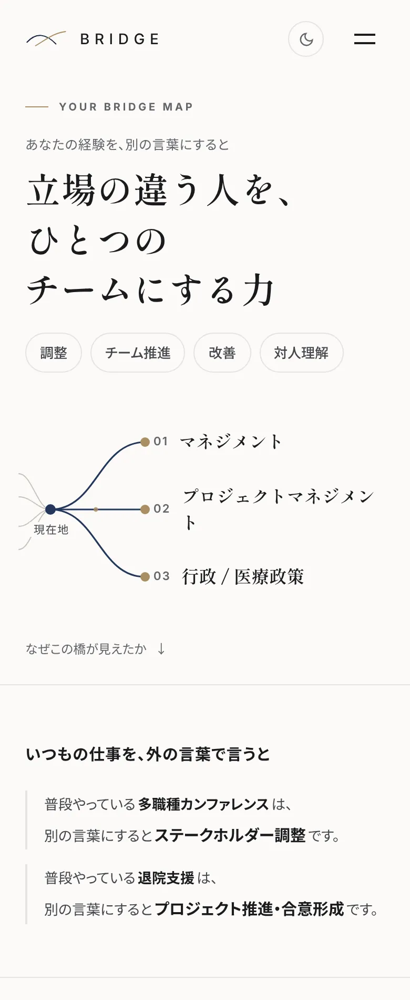
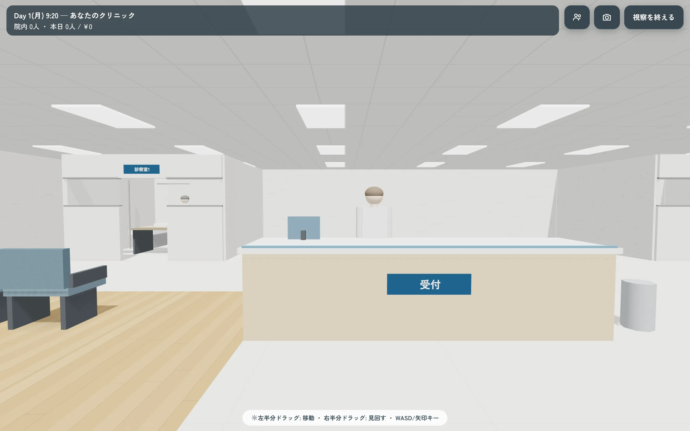
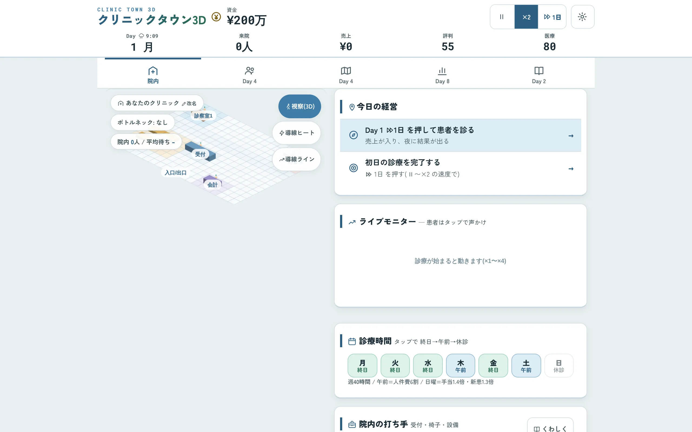
Q1なかなか心を開いてくれなかった患者さん・利用者さんが、少しずつ変わっていった場面を思い出せますか Q2患者さんやご家族への説明で、伝わり方を工夫した場面はありますか Q3いつもと違う様子に気づいて、早めに動けた場面はありますか 18の質問のうち、はじめの3問 経験の棚卸し18 QUESTIONS 6つの場面から、3問ずつ患者・利用者対応多職種連携後輩指導・教育業務改善リスク管理委員会・組織活動 臨時休診のお知らせ 誠に勝手ながら、院内研修のため、下記のとおり休診とさせていただきます。 〇月〇日(〇) 終日休診 ご迷惑をおかけしますが、ご理解のほどよろしくお願い申し上げます。 〇〇クリニック 物品の置き場所変えた動線に合わせた物品配置の見直し 送り見てから動いてた申し送りに基づく優先順位づけ 家族に説明してた家族への説明と暮らしへの橋渡し 板挟みになってた立場の違う人の間の調整押すと手に取れます。ドラッグで動かせます。押すと手に取れます。長押しで動かせます。
目的から探す
ぜんぶで29点あります。
キャリア・経験を整理する7点

経営・管理の実務に使う9点
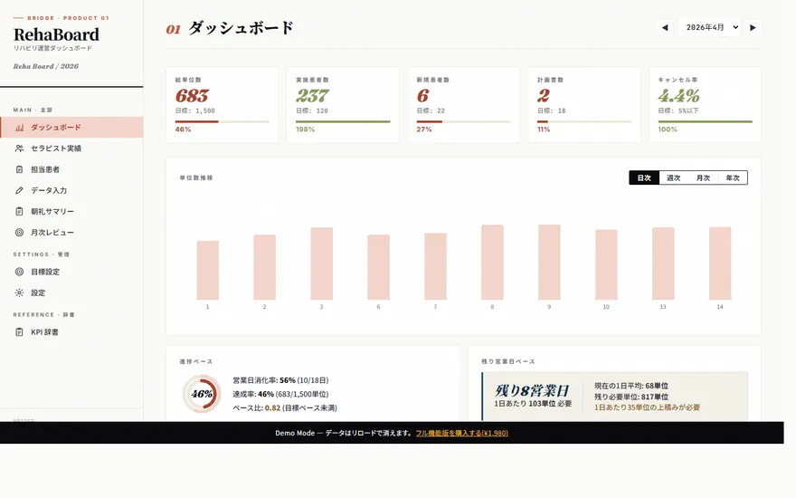
RehaBoardリハ部門の運営を、1画面に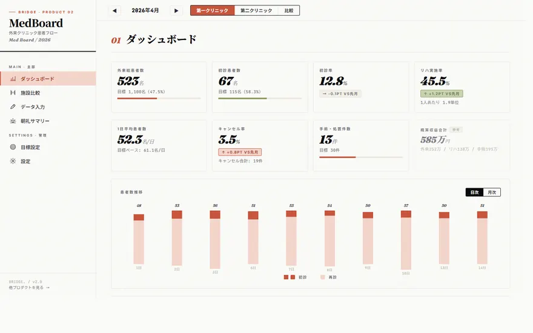
MedBoard外来の患者フローを、2施設で見比べる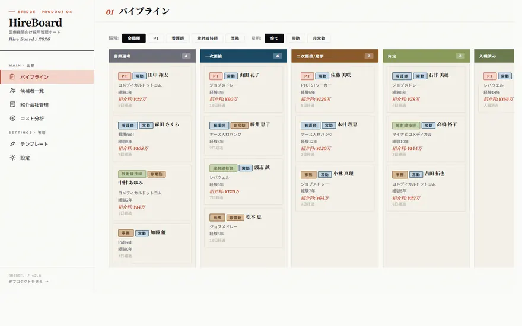
HireBoard医療機関の採用を、カンバンで追う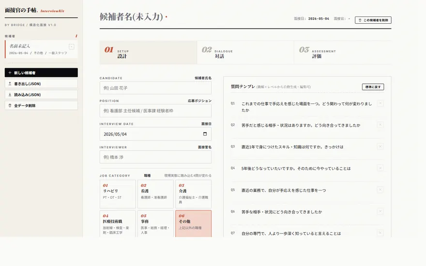
面接官の手帖面接の質問を用意し、事実と印象を分けて記録する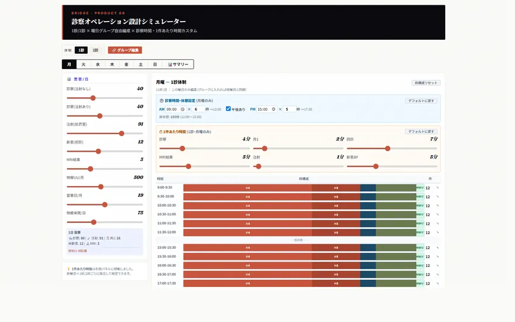
ConsultSim1診と2診で、待ち時間がどう変わるかを試す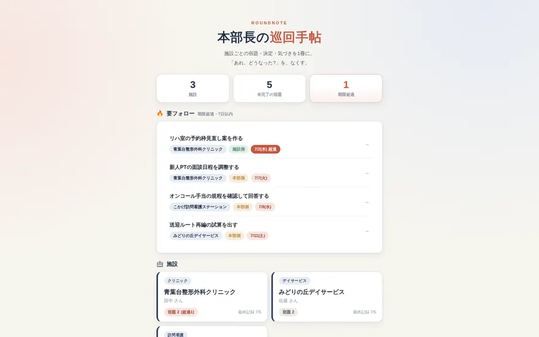
本部長の巡回手帖複数施設の巡回を、1冊の手帖に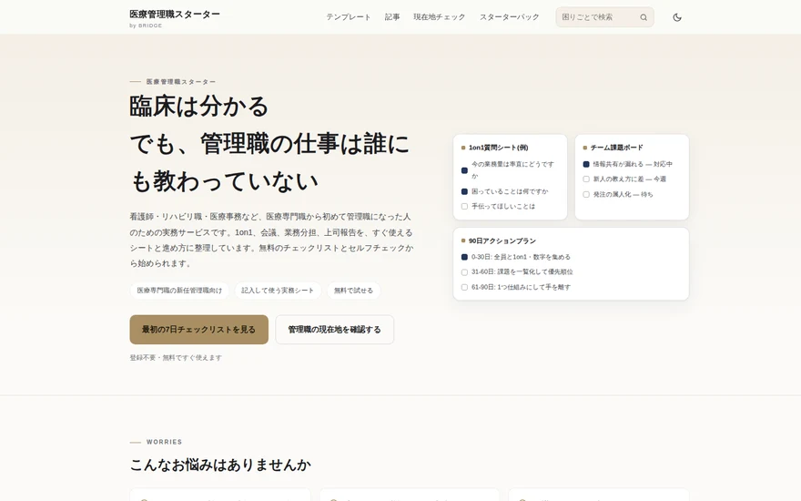
医療管理職スターター初めて管理職になった人の、チェックリストと記入式シート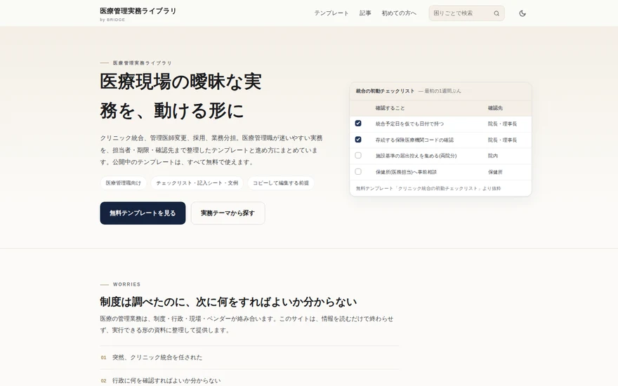
医療管理実務ライブラリ医療管理の実務手順と、無料テンプレート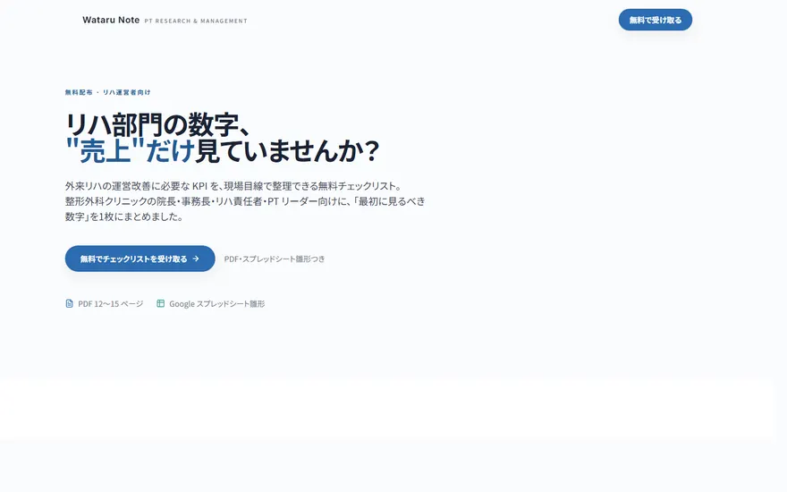
Reha Checklistリハ部門KPIのチェックリスト(PDF・スプレッドシート)
明日の業務を楽にする3点


医療経営を学ぶ3点
学習を続ける3点
気軽に試す・作品を楽しむ4点
運営者
- 記入者
- 橋本 渉
- 職種
- 理学療法士
外に出てみると、病院で当たり前にやっていた調整や記録が、別の場所では別の名前で呼ばれていました。
BRIDGE は、ひとりで運営しています。
正解を与えるのではなく、
選択肢を増やす
考え方を読む
見るだけで帰っても、それで十分です。